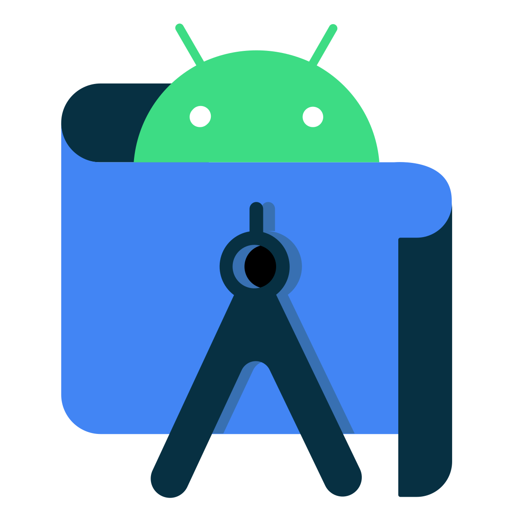

projet crée en equipe au sein d'esprit qui permet de
gerer les services des hotels et des restaurants
en utilisant mern stack pour le developpement d'une interface web
Projet|02
Tunisian Got Talent:
une interface multiplateforme conçu en équipe pour une émission télévisée intitulé tunisian got talent sur web mobile et desktop en java et avec symfony
permet l upload la participation et la gestion des candidat de l'émission

Projet|03
FAC Service:
une application android conçu en équipe en qui permet
Upload des différents ds et devoirs pour que les étudiants puissent
y accéder et trouver tous les ressources pour réviser